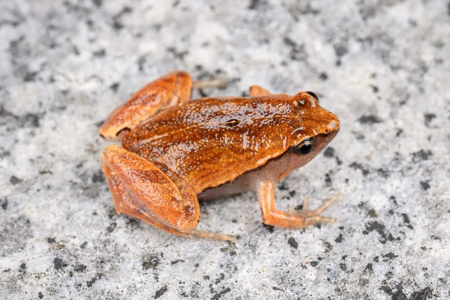

两栖动物 · 动物界
小弧斑姬蛙 Microhyla heymonsi

中国南方常见的小型姬蛙，体长仅 2 厘米左右，背部深褐、眼后有一道浅色弧纹，雨后常在稻田与草地中齐声鸣叫。
- 分类
- 门脊索动物门纲两栖纲目无尾目科姬蛙科属姬蛙属
- 栖息环境
- 中国南方的稻田、草地、水塘边、林缘与湿润灌丛
- 地理分布
- 中国长江以南各地及台湾，并延伸至越南、泰国、马来西亚等东南亚国家
- 保护级别
- IUCN 无危（LC）
物种志
小弧斑姬蛙体长仅 20–25 mm，是体型很小的蛙类。头小，吻端尖，身体短胖，背部皮肤光滑，体色深褐或灰褐，眼后至肩部常有一道浅色弧形斑纹，背部中央有深色纵纹，四肢短小，趾端有小吸盘。
它们分布于中国长江以南各地及台湾，并延伸至越南、泰国、马来西亚等东南亚国家，栖息于稻田、草地、水塘边、林缘与湿润的灌丛。小弧斑姬蛙多在雨后和夜间鸣叫，叫声细弱像蟋蟀，雄蛙常聚集在水边浅草中。食物以蚂蚁、白蚁、蚜虫等小型昆虫为主。繁殖期在 4–8 月，卵产于静水表面或水草上，蝌蚪小巧，约一个月完成变态。它们适应性强，在农田和城镇绿地中也能见到。
形态与习性
- 食性蚂蚁、白蚁、蚜虫等小型昆虫
- 体长20–25 mm
- 繁殖4–8 月，卵产于静水表面或水草上
- 习性雨后夜间鸣叫，叫声细弱似虫鸣
- 特征眼后至肩部有一道浅色弧纹
- 分布中国南方至东南亚的农田与草地
趣味知识
- 它体长只有 2 cm 左右，叫声细弱，常被误认为是虫鸣。
- 眼后那道浅色弧纹是它得名的原因，也是识别它的关键。
- 大雨过后，雄蛙会聚集在水边浅草中集体鸣叫，声音此起彼伏。